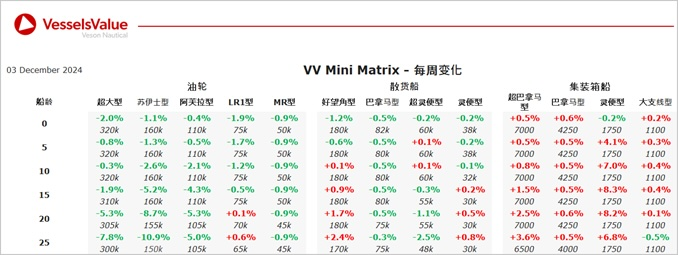

inWeekly Vessel Valuations Report04/12/2024

Bulkers: Bulker values remain stable this week, with a small increase observed for older tonnage Capesizes
Capesize BC Nord Energy (179,000 DWT, Feb 2012, Hanjin Subic) sold to Hayfin Capital Management for USD 32 mil, VV Value USD 31.18 mil
Supramax BC Atlantica Sun (55,700 DWT, Apr 2009, Mitsui Tamano) sold to unknown Chinese buyers for USD 15.2 mil, VV Value USD 14.62 mil
Supramax BC Aurora SB (56,100 DWT, Sep 2009, Mitsui Tamano) sold SS/DD Passed to unknown Indonesian buyers for USD 15.8 mil, VV Value USD 15.24 mil
Handy BC Four Nabucco (34,400 DWT, May 2010, SPP) sold to undisclosed buyers for 11.8 mil, VV Value USD 12.21 mil
Tankers:Older tonnage Tanker values softening last week owing to some recent sales with smaller tonnage remaining more stable
VLCC Tricia II (281,100 DWT, Aug 2000, Mitsubishi HI) sold to unknown Chinese for USD 20.9 mil, VV Value USD 22.93 mil
Suezmax Evagoras (165,200 DWT, Mar 2003, Hyundai Samho Heavy Ind) sold to undisclosed buyers for USD 25 mil, VV Value USD 26.35 mil
Aframax Sofia II (105,400 DWT, Sep 2008, Sumitomo) sold to Beks Shipmanagement and Trading SA for USD 32 mil, VV Value USD 33.36 mil
Containers:Container values largely remain stable, with a small increase in midage and older Post Panamax vessels and the recent sale of Intersea Traveller pushing up values of midage Sub Panamax Containers
Sub Panamax Intersea Traveller (2,102 TEU, HDW, 2008) sold to Chinese buyers for USD 22.5 mil, VV Value USD 20.34 mil
